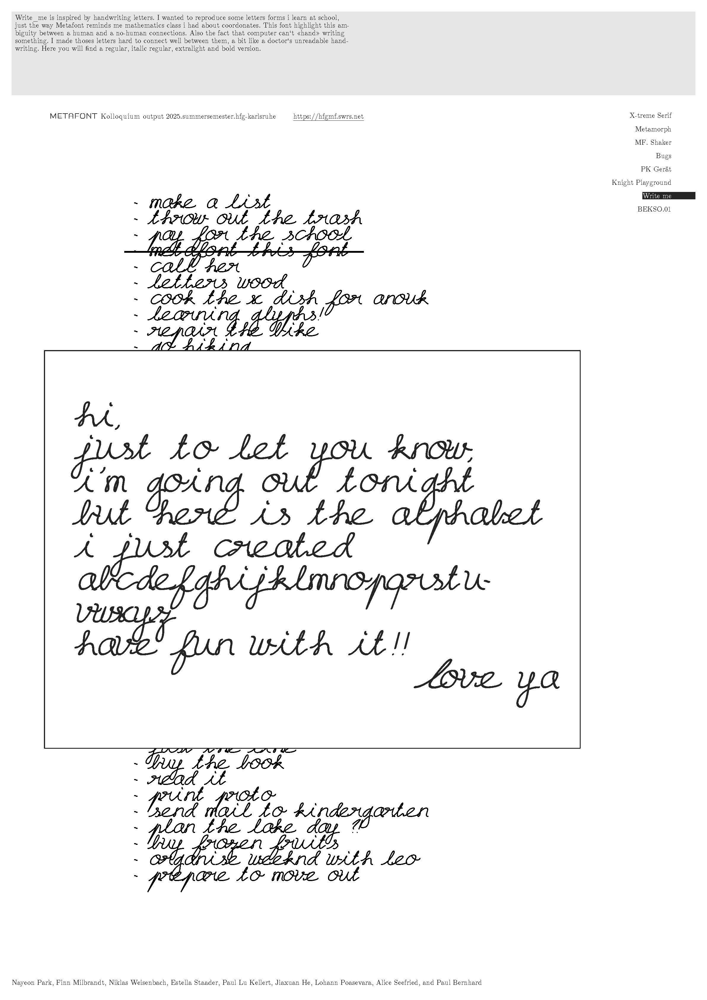
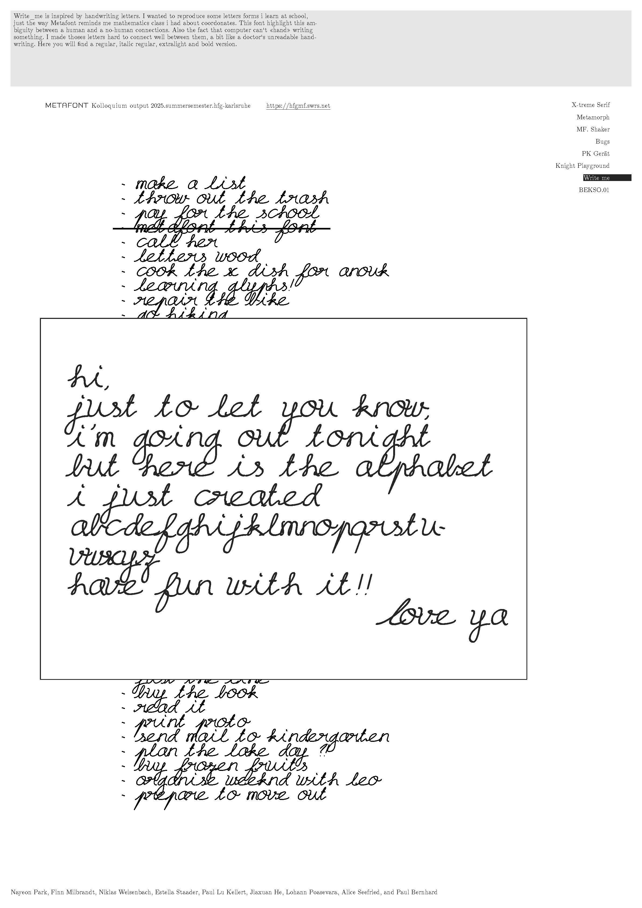
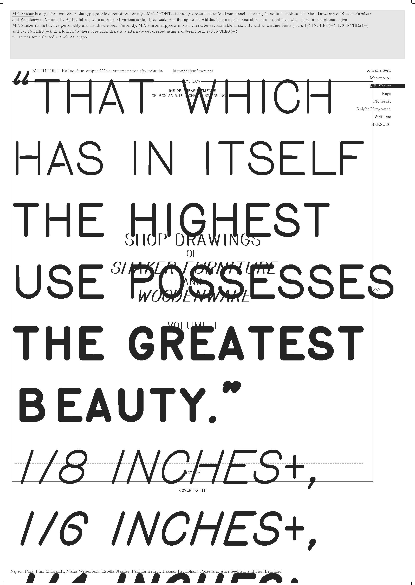
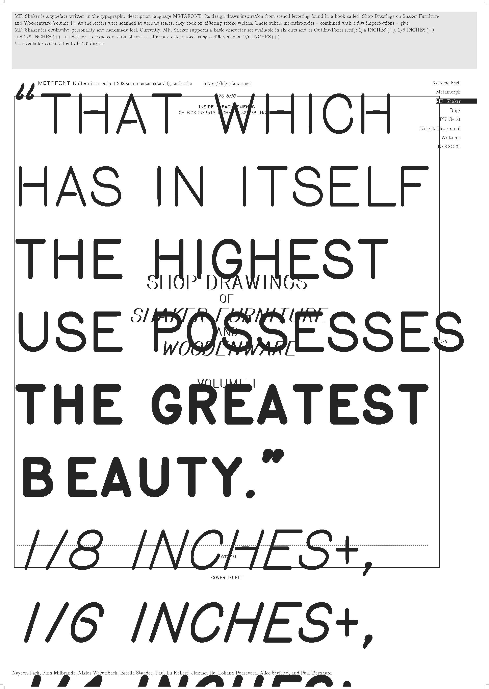
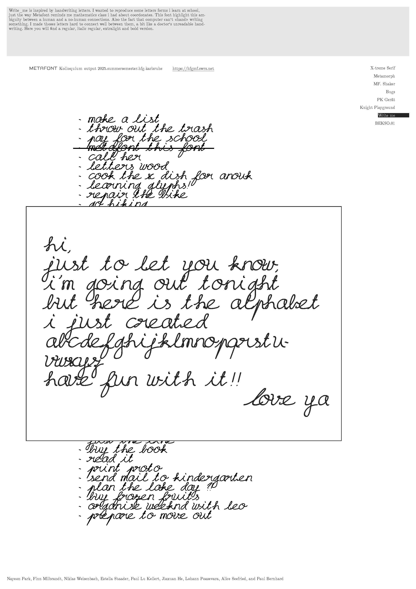
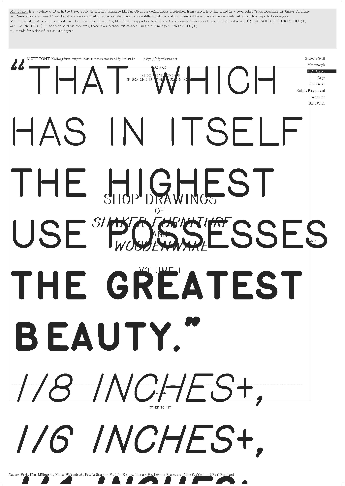

 


Posters
Typefaces
Posters
Metafont is a software and a chameleon of sorts. It allows a designer to describe typographic characters algorithmically for the very intelligence of a letter to “be captured in a way that permits us to obtain an infinite variety of related letters from the same specification.” Sounds daring?
Somewhen in the 1960s printed matter is typically typeset with metal letters. Setting these typographic chunks into lines of words, sentences and paragraphs, the composition of a single page seems a daunting task. — where is the O? Heck, i’ll just use a 0 — And when the first two humble volumes of The Art of Computer Programming by Donald E. Knuth are published, typesetters are faced with multistoried mathematical formulas of cryptic symbols, by the hundreds, and just a few dozen gifted ones are capable of composing such a technical text into a readable printed matter.
Later, in 1972, the second volume of The Art of Computer Programming is out of print and to be reissued. This time set with phototypesetting, an emerging technology rapidly replacing its hot metal counterpart. Still in its infancy, the new light-based technology produces a poor quality of printed formulas that leaves Donald deeply disappointed and wondering why one should spend six years in writing what nobody will be able to read. He sets out to tackle this problem on his own and designs a new digital typesetting system, “TeX”, accompanied by an independent font description system, “Metafont”. These softwares will become an instrument used by scientists around the world to facilitate the typesetting and publication of scientific papers. For Donald equations must “endure the smudge of the over-inked press onto the flimsiest of papers. They must not fade away on the drum of a laserprinter, nor under the not-so bright light of ancient photocopiers in the math library. The letters must not blur under the dimmest of lighting near the periodicals through the foggiest of trifocals; they must shine clearly through the forest of pen scratching during proofreading.”
Whether Metafont was and is an efficient candidate to meet these ambitious criteria remains questionable. But we will take its story as a starting point for this colloquium on: Metafont, its birth, its matter, and its arrogance. On four dates we will look further into the history of this font description language, put it to use and describe characters together — an O, or an 0, or… let's see. There will be code and we will move in the austere environment of the computer command line, so any existing knowledge of programming might proof helpful. But if you are neither familiar with code or nor a big friend of algebra, never fear, we will all be in the same boat together, full of mistakes.

